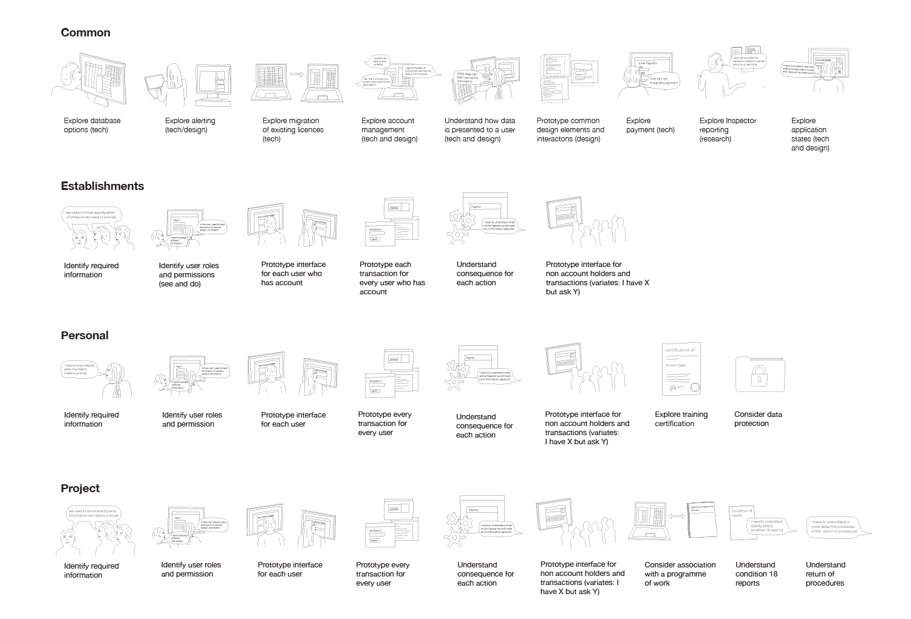
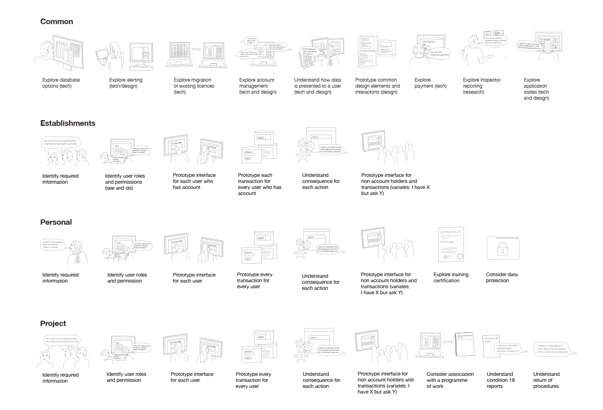

Delivering home office digital services
HOME OFFICE DIGITAL
I have been working at the Home Office Digital as an interaction designer for the past 9 months. On the teams I have been a part of, I have contributed to a close collaborative relationship between the researchers, developers, business analysts and other designers, key for successful delivery team. Due to the nature of the work I am restricted by what I can show but I have picked out examples that I can show, where I have had a particular impact on projects, or the home office design community.
MAPPING
I have been brought into different teams to assist mapping complex systems and passing of information. In both instances untangling and creating a readable visual form of the services enabled stakeholders to be brought up to speed and in one case time and money-saving decisions to be made.
 

VISUAL COMMUNICATION
Good visual communication is key to ensure that ideas are understood clearly by people when asking them to commit to a way of thinking, or to have an idea of what we are proposing. During my time at the Home Office I have created many posters, banners and training material for various people. These set for service designer Kate Tarling, have been shared extensively to communicate clearly the key points of each agile delivery stage; discovery, alpha, beta, live.


COLLABORATIVE SERVICE DESIGN
As a part of a cross-discipline team working to come to a solution or see the crux of the problem, I have been a key member especially when participating in workshops or meetings. The most recent project was an internal service that required attention to understand the greater services user needs, and the people who interact with the service’s needs, and how they could meet in the middle. The process of this meant often having to define and redefine the user, and champion agile practices to preserve their needs remaining at the core of the service.

RAPID PROTOTYPING
A large part of being an interaction designer at Home Office digital, is being able to take research insights and pull them together in a design or prototype that can then be tested to learn even more. In cases where the user doesn’t interact with the website in the way that you have expected, I have rapidly prototyped alternative versions that then will help us to see how they are understanding the page.